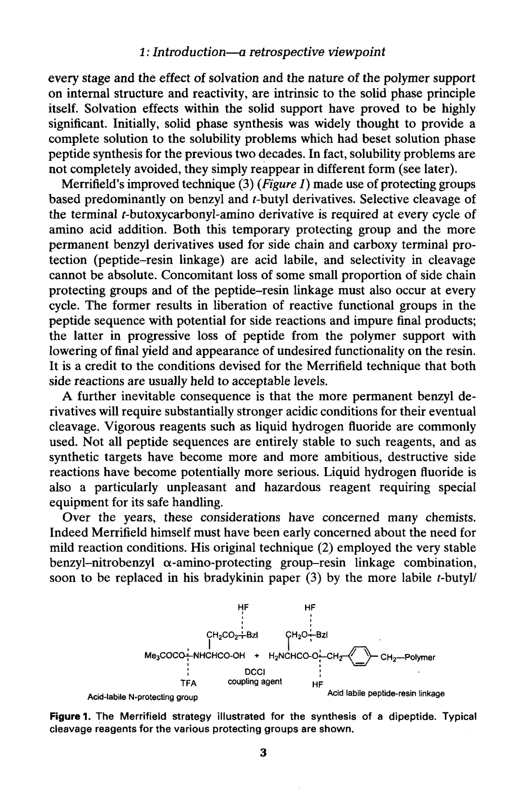
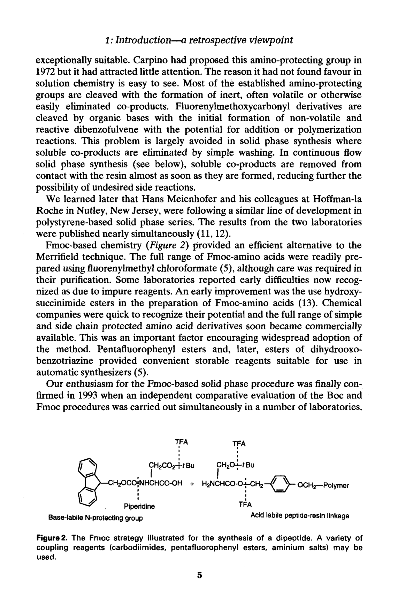

第一章 导论——回顾性视角
Chapter 1: Introduction - A Retrospective Viewpoint
作者：R. C. Sheppard
1963年，英国化学会出版的《化学进展年评》（Annual Reports on the Progress of Chemistry）在其肽化学栏目中引用了 Merrifield 刚刚发表在《美国化学会志》（JACS）上的一篇论文。原文如此描述这一新颖方法：
"一种新颖的肽合成方法是使用氯甲基化聚苯乙烯聚合物作为不溶性但多孔的固相载体，在其上进行偶联反应。与聚合物的连接构成了羧基的保护（以修饰的苄酯形式），肽链从氨基端通过连续的碳二亚胺（carbodiimide）偶联反应逐步延长。该方法已应用于四肽的合成，但不完全的反应导致副产物的积累。这一有趣方法的进一步发展值得期待。"
Sheppard 回忆道，当时他曾以为这篇论文可能既是固相肽合成技术的开始，也是它的终结。对许多有机化学家来说，所描述的结果在预料之中——异相反应难以进行完全，必然导致产物不纯。随着肽链长度的增加，这一问题以及纯化问题都会进一步恶化。
实际上，当时人们对真正意义上的异相（或表面）反应与溶剂化凝胶相中的反应之间的区别认识不足。后者的反应条件实际上与溶液中的情况更为接近。然而，Merrifield 的新技术也违背了当时有机合成的许多基本原则——传统有机合成要求在每个合成步骤后进行严格的分离、纯化和表征。而在 Merrifield 的技术中，分离仅需洗涤树脂，没有其他纯化步骤，也几乎不对树脂结合的中间体进行表征。不过，正是前两点（简单的洗涤分离和无中间纯化）赋予了该方法极高的速度和简便性，这正是其效率的核心来源。
在1963年年评出版之前，局势就发生了戏剧性的变化。Merrifield 在同一期刊上发表了第二篇论文，相当隐晦地提到："该方法已进一步发展，并用于缓激肽（bradykinin）的合成。"
无论以任何标准衡量，这都是一次出色的合成。化学方面的改进使得缓激肽（一种九肽）的序列组装仅需4天完成，分离、纯化和全面表征再用5天。高纯度、完全具有生物活性的材料的总收率达到68%。这些结果远超当时溶液合成法所能实现的任何成就，由此引发了固相肽合成研究的热潮。
Merrifield 的发展正当其时。当时正值天然肽激素、抗生素和其他生物活性肽被大量分离和进行深入结构与功能研究的时期。这项新技术被生化学家、药理学家和其他科研人员热情采纳。大约10年后，Meienhofer 在其1973年的重要综述中已经能列出超过500篇已发表的固相合成文献。这样的产出如果用当时的溶液法实现，将需要投入大得多的资源。固相肽合成的应用持续蓬勃发展，并以同样的成功扩展到极为重要的寡核苷酸合成领域。
当然，并非所有早期合成产物都是在没有困难的情况下获得的，或者说并非都达到了令人满意的纯度。化学问题、可用的纯化方法的局限，以及缺乏适用于固相的可靠分析技术，必然导致了许多失败——其中一些甚至未被认识到。在这个以应用为重点的时期，许多实验室的肽化学家虽然积极参与固相合成，但对体系的真正理解进展缓慢。
固相肽合成的化学问题现在已被更好地理解。其中一些问题——例如由剧烈反应条件引起的困难，以及临时保护基和永久保护基之间的差异不稳定性——与方法本身的特定化学实现有关。另一些问题则是固相原理本身固有的，特别是需要在每一个阶段都实现接近定量的转化，以及溶剂化效应和聚合物载体性质对内部结构和反应性的影响。
溶剂化效应在固相载体内部被证明极为重要。最初，人们广泛认为固相合成可以完全解决困扰溶液相肽合成二十年的溶解性问题。然而事实上，溶解性问题并未完全避免——它们只是以不同的形式重新出现了（详见后文关于"困难序列"的讨论）。
Merrifield 改进的技术（Figure 1）主要使用基于苄基（benzyl）和叔丁基（t-butyl）衍生物的保护基。其核心困境在于：
1. 每个氨基酸添加循环中都需要选择性切割末端的 Boc（叔丁氧羰基）氨基保护基。 2. Boc（临时保护基）和用于侧链保护及 C 端（肽-树脂键）的苄基衍生物（永久保护基）都是酸敏感的（acid-labile）。 3. 酸切割的选择性不可能是绝对的——每次循环中，不可避免地会有少量侧链保护基和肽-树脂键同时断裂。 4. 侧链保护基的意外去除导致肽序列中释放出反应性官能团，可能导致副反应和最终产物不纯。 5. 肽-树脂键的断裂导致肽从聚合物载体上渐进性丢失，降低最终收率，树脂上出现不需要的官能团。

Figure 1. Merrifield 策略示意图——以二肽合成为例。各保护基的典型切割试剂已标出。
另一个不可避免的后果是，更永久性的苄基衍生物需要相当强的酸性条件才能最终切割。通常需要使用液态氟化氢（HF）这样的强试剂。并非所有肽序列都能完全耐受此类试剂，而且随着合成目标越来越雄心勃勃，破坏性副反应的潜在严重性也在增加。液态 HF 还是一种特别令人不快和危险的试剂，需要专门的特殊设备来确保安全操作。
多年来，上述问题一直困扰着许多化学家。Merrifield 本人也很早就关注到温和反应条件的必要性。他的原始技术使用了非常稳定的苄基-硝基苄基 alpha-氨基保护基/树脂键组合，很快在缓激肽论文中被更不稳定的叔丁基/苄基系统取代。
早期阶段的其他相关探索集中在开发更酸敏感的 alpha-氨基保护基。被研究过的包括：N-三苯甲基（N-Trityl）、邻硝基苯硫基（o-nitrophenylsulphenyl）、alpha,alpha-二甲基-3,5-二甲氧基苄氧羰基、以及联苯基异丙氧羰基（Bpoc）——可能是其中最有前景的。Bpoc 与更酸敏感的对烷氧基苄酯肽-树脂键组合，提供了一个条件更温和的替代系统，但它未能取代甚至严重挑战已根深蒂固的 Merrifield 技术。可能的原因包括兼容性侧链保护的困难以及缺乏商业可得的氨基酸衍生物。固相肽合成从业者表现出的保守主义在整部历史中都非常明显。
1972年，Sheppard 在剑桥大学的实验室开始了固相肽合成的开发工作。他们认识到生物学实验室对加速合成方法的需求，希望设计一种新系统来避免或至少减轻上述一些困难。
第一步，同事 Eric Atherton 成功开发了一种与极性反应介质兼容的新型极性固体载体，兼顾了固相肽和寡核苷酸合成的特殊溶剂化需求。在肽合成中，这种新树脂最初使用了与标准 Merrifield 技术类似的酸敏感保护基组合。然而，当这种新树脂应用于更长、更复杂的序列时，他们认为反复用 TFA 切割 Boc 基团以及最终用 HF 脱离反应中大量接触酸性试剂可能已经成为限制因素。
更令人担忧的是，Sheppard 注意到实验室中处理液态 HF 的严格安全措施似乎逐渐被放松。尤其令人不安的是，他在欧洲肽研讨会上遇到一位肽化学家朋友，其手腕上有严重且长期不愈的 HF 灼伤。这坚定了他寻找替代方案的决心。
显而易见的下一步是重新安排整体保护基策略，以减少与酸性试剂的接触。关键思路是：将碱不稳定性（base-lability）分配给 N 端临时保护基，这样就可以使用叔丁基或其他极酸敏感基团来保护侧链和 C 端（树脂键连接）。这可以完全消除液态 HF 或其他超强酸试剂的使用，提供化学上温和得多的整体系统。
在对一系列碱敏感 N 端保护基的研究中，Carpino 于1972年提出的 9-芴甲氧羰基（9-fluorenylmethoxycarbonyl, Fmoc）基团很快证明极为适合。
Fmoc 在溶液化学中不受青睐的原因显而易见：大多数已建立的氨基保护基在切割时生成惰性、通常挥发性好或易于消除的副产物。而 Fmoc 被有机碱切割时，初始生成非挥发性的、活泼的二苯并富烯（dibenzofulvene），具有加成或聚合反应的潜力。
然而，这个问题在固相合成中基本不存在——可溶性副产物通过简单的洗涤即可去除。在连续流固相合成中，可溶性副产物几乎在形成的瞬间就被从与树脂的接触中带走，进一步降低了不需要的副反应的可能性。
Sheppard 后来得知，Hans Meienhofer 及其在 Hoffman-la Roche（新泽西州纳特利）的同事也在进行基于聚苯乙烯的类似开发。两个实验室的结果几乎同时发表（1978年）。
基于 Fmoc 的化学策略（Figure 2）提供了 Merrifield 技术的高效替代方案。使用芴甲基氯甲酸酯（fluorenylmethyl chloroformate）可以容易地制备全系列Fmoc-氨基酸衍生物，尽管纯化时需要小心。一些实验室报告了早期困难，后来认识到是由于试剂不纯所致。
一个早期改进是在 Fmoc-氨基酸制备中使用羟基琥珀酰亚胺酯。化学公司迅速认识到其潜力，全系列简单和侧链保护的氨基酸衍生物很快实现商业化供应。这是推动该方法广泛采用的重要因素。五氟苯基酯（OPfp）以及后来的二氢氧代苯并三嗪酯为自动合成器提供了方便的、可储存的试剂。

Figure 2. Fmoc 策略示意图——以二肽合成为例。可使用多种偶联试剂（碳二亚胺、五氟苯基酯、aminium 盐等）。
1993年，在多个实验室同时进行的一项 Boc 和 Fmoc 程序的独立比较评估中，获得了令人信服的证据证明 Fmoc 方法温和反应条件的优势（参考文献14）。
Fmoc 程序的引入带来了另一个优势——芴衍生物（fluorene derivatives）在紫外光谱的可及区域有强吸收。这一特性为固相合成中的分析控制提供了简单方法的基础。
从溶液到固相（以及反向）的芴衍生物的摄取现在可以轻松地通过分光光度法追踪。这促进了连续流合成方法（continuous-flow synthesis）的发展——在这种方法中，试剂通过泵持续流过一个固定的、物理支撑的树脂床。在流出的试剂流中安装UV 检测池，可以完整且即时地记录正在发生的酰化和脱保护步骤。
最简单的层面上，它为化学家提供了重要的保证——一切正常进行；或者可以及时发现操作或合成器错误并加以纠正。更高层面上，它使全自动合成器的构建成为可能——由计算机解读分析数据来控制从一个步骤到下一个步骤的推进。这与早期常用"完全盲操作"的固相技术形成了鲜明对比。
芴衍生物的紫外吸收还促进了对固相反应更详细的分析研究。特别是，它允许对所谓的"困难序列"（difficult sequence）问题进行仔细检查。
对于某些肽序列，随着树脂结合链的延长，会观察到脱保护和偶联反应速率的突然——有时是灾难性的——下降。这被认为是树脂基质内肽链之间发生缔合（association）的后果，即溶剂化不充分。由于这些极低的反应速率，合成往往无法顺利完成。
"困难序列"在使用 Boc 和 Fmoc 化学时都会遇到，尽管在后者中 Fmoc 衍生物通常较低的溶解性（溶剂化性）可能也有影响。使用更强溶剂化介质（如 DMF 或 DMSO 类型）可以减少但不能完全消除这一问题。在肽序列中引入三级酰胺键（如脯氨酸残基）可以减少"困难序列"的发生，这表明链间氢键可能是一个重要因素。
一项关于氨基酸组成、侧链结构和保护基以及溶剂对 Fmoc 切割反应速率影响的分光光度研究提供了更多关于"困难序列"的信息。特别值得注意的是，该研究确定：只需在肽链中大约每第六个残基插入一个三级酰胺键，即可消除链间缔合。这使得使用临时烷基或芳基 N-取代基成为实际可行的方案。
在酰化例如 N-苄基肽树脂时，通常会遇到巨大的空间位阻，但芳环上的取代模式（邻羟基 + 甲氧基）既提供了一个酸敏感、易于去除的保护基，又提供了一条便利的酰化反应机理途径。
进入的 Fmoc-氨基酸的偶联发生在相对不拥挤的邻位羟基上，由附近的二级氨基提供内部碱催化。然后通过分子内 O->N 迁移完成偶联反应。最后这一迁移步骤不如预期迅速——可能是由于环状中间体的拥挤——但它提供了一个非常可行的系统，有望完全解决"困难序列"问题。
同样重要的是，它还解决了长期阻碍高效通用固相片段缩合（fragment condensation）程序发展的关键溶解性问题。基于 Fmoc 的固相合成现在可以用于制备游离溶解、易于纯化的保护肽片段，这些片段可以在固相载体上高效组装成合成蛋白质（参考文献17）。
基于 Fmoc 的固相肽合成现已与 Merrifield 技术牢固并立。它已被证明既高效又多功能：
- 提供了逐步合成（单个残基添加）和片段组装程序 - 建立了分析和监测技术 - 解决了一些先前限制性的化学问题 - 促进了连续流方法的发展 - 推动了带有分析反馈控制的复杂自动肽合成设备的构建 - 应用于修饰肽的合成（包括磷酸化和糖基化衍生物） - 支持肽的多重合成和组合化学技术 - 通常被认为是肽合成的首选方法
1. Merrifield 于1963年发明固相肽合成（SPPS），1964年用缓激肽（九肽）的合成证明了该技术的强大威力——4天组装，68%总收率，远超溶液法。 2. Merrifield 的 Boc/Bn 策略的核心困境：临时保护基（Boc）和永久保护基（苄基）都是酸敏感的，切割选择性不可能绝对完全，导致每次循环中侧链保护基和肽-树脂键的少量丢失。最终切割需要使用高毒性的液态 HF。 3. Sheppard 团队（1972年起）构思了正交保护策略：将碱敏感性分配给 N 端临时保护基，从而可以使用温和酸敏感的侧链和 C 端保护基，完全避免 HF。 4. Carpino 提出的 Fmoc 基团（1972年）被证明极为适合固相合成——可溶性副产物通过洗涤去除，避免了溶液化学中的二苯并富烯问题。两个团队（Sheppard 和 Meienhofer）几乎同时发表了 Fmoc-SPPS 方法（1978年）。 5. Fmoc 的 UV 吸收特性使实时监测和连续流合成成为可能——这是早期"盲操作"固相技术的革命性进步。 6. "困难序列"问题（肽链聚集导致反应速率灾难性下降）通过 Hmb 骨架酰胺保护和假脯氨酸等方法得到有效解决。 7. Fmoc-SPPS 已成为现代肽合成的首选方法，应用于逐步合成、片段组装、修饰肽合成、多重合成和组合化学等广泛领域。
1. Sheppard, R. C. (1963). Ann. Rep., 60, 448.
2. Merrifield, R. B. (1963). J. Amer. Chem. Soc., 85, 2149.
3. Merrifield, R. B. (1964). J. Amer. Chem. Soc., 86, 304.
4. Meienhofer, H. (1973). Progr. Hormone Research, 2, 46.
5. Atherton, E. and Sheppard, R. C. (1989). Solid phase peptide synthesis. IRL Press, Oxford.
6. Sheppard, R. C. (1995). In Peptides 1994, 23rd European Peptide Symposium, p. 3.
7. Wang, S. S. and Merrifield, R. B. (1969). J. Amer. Chem. Soc., 91, 6488.
8. Atherton, E., Clive, D. L. J., and Sheppard, R. C. (1975). J. Amer. Chem. Soc., 97, 6584.
9. Gait, M. J. and Sheppard, R. C. (1976). J. Amer. Chem. Soc., 98, 8514.
10. Carpino, L. A. and Han, G. Y. (1972). J. Org. Chem., 37, 3404.
11. Chang, C.-D. and Meienhofer, J. (1978). Int. J. Peptide Prot. Res., 11, 246.
12. Atherton, E., Fox, H., Harkiss, D., Logan, C. J., Sheppard, R. C., and Williams, B. J. (1978). J. Chem. Soc., Chem. Comm., 537.
13. Sigler, G. F., et al. (1983). Biopolymers, 22, 2157.
14. Fields, G. B., et al. (1993). In Techniques in protein chemistry IV, p. 229.
15. Bedford, J., et al. (1992). Int. J. Peptide Prot. Res., 40, 300.
16. Johnson, T., Quibell, M., and Sheppard, R. C. (1995). J. Peptide Sci., 1, 11.
17. Quibell, M., Packman, L. C., and Johnson, T. (1995). J. Amer. Chem. Soc., 117, 11656.